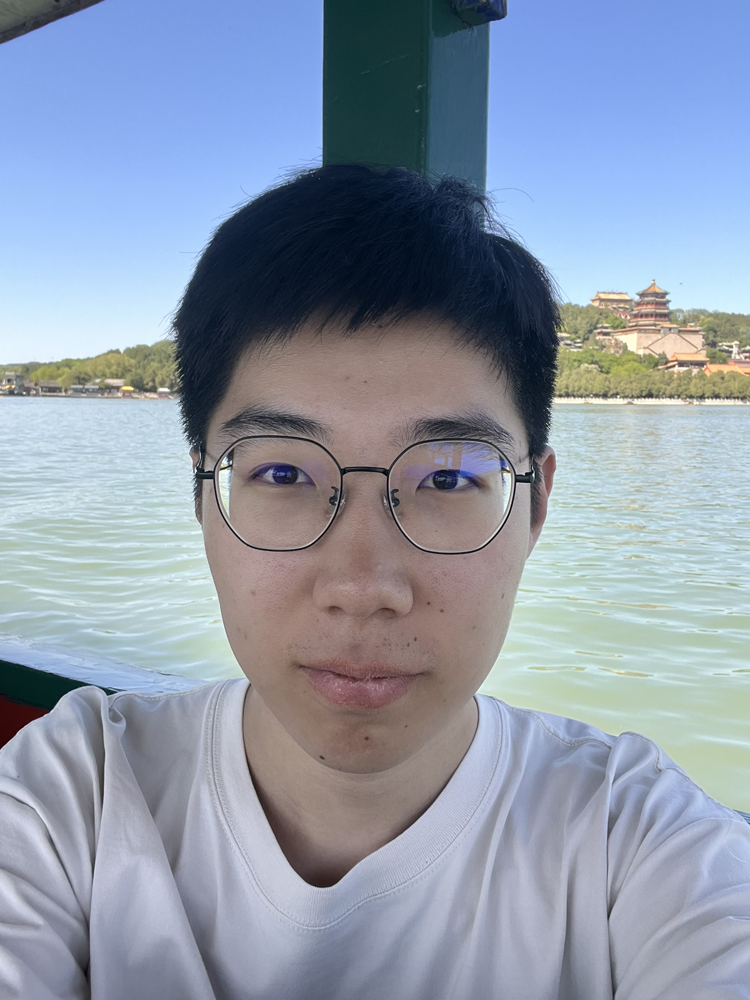

I am a final-year undergraduate in Robotics Engineering at Shandong University, College of Control Science and Engineering, passionate about the intersection of machine learning, control systems, and human–robot interaction. In September 2026, I will begin my MS in Computer Engineering at Northwestern University.
My research focuses on machine learning-based human gait analysis — specifically, detecting and predicting gait phases from surface electromyography (sEMG) signals using artificial neural networks. I have published three papers at international conferences and received national and provincial awards in robotics competitions.
I spent Fall 2025 as an exchange student at the University of Wisconsin–Madison (GPA: 4.0 / 4.0), where I worked in the Flexible Electronics & Additive Printing Lab on electrohydrodynamic (EHD) printing.